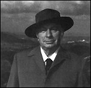
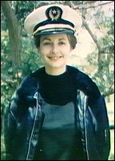

PART FOUR:
THE SEA ORGANIZATION 1966-1976
CHAPTER ONE
Scientology at Sea
Scientology thrives on a climate of ignorance
and indifference.
- KENNETH ROBINSON,
British Minister for Health
The new Guardian took orders only from the Executive
Director of the Church of Scientology. L. Ron Hubbard was appointing a deputy. He kept the
new position in the family: Mary Sue Hubbard was the first Guardian, later becoming the
"Controller," a post created between the Executive Director and the Guardian. 1
Among the duties of the Guardian was the "LRH
Heavy Hussars Hat" (a misnomer, as Hussars were light cavalry).
"Hat" was Hubbard's usual term for "job." The Guardian's Office (or
"GO") would deal with any "threat of great importance" to Scientology.
The tenure of executives in Scientology organizations is usually brief; the Guardian is
one of the few exceptions. Jane Kember, Mary Sue's successor, held the position for
thirteen years. Mary Sue was her superior, as Controller, throughout that time.
The Guardian's Office was responsible for responding
to any attack on Scientology. An "attack" might simply be a quizzical newspaper
article. The GO is well remembered in London, where the press is still reticent about
Scientology stories. The "Legal Bureau" of the GO issued hundreds of
court writs, itself losing count. 2
The GO dealt with public relations, legal actions, and the gathering of
"intelligence." It conducted campaigns against psychiatry, Interpol, the
Internal Revenue Service, drug abuse, and government secrecy, largely under the heading
"Social Coordination," or "SOCO."
The GO campaign against the tax authorities was not
altogether altruistic. On April 30, 1966, the Hubbard Communications Office Ltd. filed its
annual accounts with the Inland Revenue in Great Britain. Sir John Foster later commented
in his government report: "According to the last set of accounts filed for HCO Ltd.,
that company seems to have been conducting an unsuccessful garage business [Hickstead
Garage]. The auditor's [accountant's] certificate is heavily qualified: various documents
could not be traced, vehicles had vanished, 'the sales figure in the trading account
cannot be regarded as anywhere near accurate' [according to the Scientology accountant],
and there had been litigation with a manager who went bankrupt. The company ended up owing
Mr. Hubbard £1,356."
 The man who was owed this sum was absent from Saint
Hill for a large part of 1966. Most of that time was spent in Rhodesia. Hubbard quietly
assured his lieutenants that he had been Cecil Rhodes in his last lifetime (right,
wearing Rhodes' favourite type of hat), so he saw his visit to Rhodesia as a
homecoming.
Hubbard went into business in Rhodesia, putting up
part of the purchase money for the Bumi Hills resort hotel on Lake Kariba. He also
hob-nobbed with the social elite. He appeared on television, telling the audience he was
no longer active in Scientology, and had become a permanent resident of Salisbury. He must
have been dismayed when that permanence crumbled with the Rhodesian refusal to renew his
visa. He put a brave face on it, returning to England in July, to be met at the airport by
hundreds of cheering Scientologists. 3
In Rhodesia, Hubbard had prepared the first two
Operating Thetan levels. After attaining the state of Clear, Scientologists could now
progress toward "total freedom" through the OT levels. Hubbard asserted that an
Operating Thetan is capable of operating, of perceiving and causing events, while
separate from his body. By doing the OT levels an individual would supposedly liberate
latent psychic abilities. From 1952, Hubbard continually insisted that the latest
techniques would bring about the state of "full OT."
The U.S. Internal Revenue Service was less interested
in Hubbard's spiritual motivation than in the mounting evidence of his financial
motivation. At the end of July, the IRS notified the Church of Scientology of California
that its tax-exempt status was being withdrawn, giving three reasons: Scientology
practitioners were making money from the "non-profit" Church; the Church's
activities were commercial; and the Church was serving the private interests of L. Ron
Hubbard. 4
Hubbard's thoughts were elsewhere, and in a flight of
fantasy, he proclaimed John McMaster the first "Pope" of Scientology in August
1966. The title did not endure. 5
It seemed that McMaster was to be Hubbard's public
successor. In fact, he was simply an emissary with little real power in the organization.
Hubbard maintained the charade of handing over responsibility by resigning as President
and Executive Director of the Church. His resignation was announced to Scientologists, but
was not actually filed with the Registrar of companies in England for three years. It was
yet another public relations gesture. Hubbard still controlled the bank accounts, and
still held the undated resignations of the board members of his many corporations. He
still wrote the Policy of the Church, and issued his orders via written Executive
Directives. Indeed, the post of Executive Director remained vacant until 1981, when
Hubbard finally appointed a replacement. Hubbard retained the day-to-day control of his
empire of Orgs. 6
Early in 1966, the LRH Finance Committee had been
established to determine how much the Church owed Hubbard. In September, Hubbard told the
press he had forgiven the Church a $13 million debt. The LRH Finance Committee had however
failed to document the millions Hubbard had taken out of the Church. The Committee had
appraised Saint Hill as having a business goodwill value of £2 million (the estate itself
was valued at less than £100,000). The Committee also included such items as the purchase
price of the yacht used by Hubbard for his Alaska trip in 1940. All part of the Hubbard's
"research," from which the Church purportedly benefited. 7
In August 1966, the Henslow case exploded into the
British newspapers. Karen Henslow was a schizophrenic who had been institutionalized
before her contact with Scientology. She had fallen in love with a Scientologist, who
promised to marry her. Henslow had worked at Saint Hill, and taken a Scientology course.
Then one night she was "Security-Checked" into the small hours, and deposited at
her mother's house. She ran into the street in her nightclothes, and ended up at the
police station at 3.00 a.m., in a highly distressed state. 8
Hubbard responded to the Henslow scandal by approving
a more thorough set of instructions for his tactic of "Noisy Investigation." A
list was to be made of everyone associated with a perceived enemy. This was to include
their dentist and doctor, along with their friends and neighbors. All of the people on the
list were to be phoned and told that the perceived enemy was under investigation for the
commission of crimes, having attacked the religious liberty of the caller. The person
being called was to be told that alarming information had already been gathered. The
primary purpose of this technique was not to collect information, but to spread suspicion
about the perceived enemy.
This directive was followed by a Hubbard Bulletin
called "The Anti-Social Personality, the Anti-Scientologist" (the two being one
and the same). Hubbard restated his earlier theory that twenty percent of the population
(the Suppressives and those under their influence, the Potential Trouble Sources,
combined) "oppose violently any betterment activity or group." He asserted that
"When we trace the cause of a failing business, we will inevitably discover somewhere
in its ranks the antisocial personality hard at work."
In fact, the cause of all disaster at work or at home,
according to Hubbard, lies with Suppressive Persons. They are characterized by a majority
of the following traits and attributes. According to Hubbard, SPs speak in generalities
("everybody knows"); deal mainly in bad news; worsen communication they are
relaying; fail to respond to psychotherapy (i.e. Scientology); are surrounded by
"cowed or ill associates or friends"; habitually select the wrong target, or
source; are unable to finish anything; willingly confess to alarming crimes, without any
sense of responsibility for them; support only destructive groups; approve only
destructive actions; detest help being given to others, and use "helping" as a
pretext to destroy others; and believe that no one really owns anything.
These points are Hubbard's reworkings of the
characteristics of the Antisocial Personality, or psychopath, given by Hervey Cleckley,
M.D., in his 1950s book The Mask of Sanity.
Having failed to secure a "safe-point" in
Rhodesia from which to resist the encroachments of the Suppressives, Hubbard planned to
take to the High Seas. At the end of 1966, he incorporated the Hubbard Explorational
Company Ltd. He titled himself the "expedition supervisor," holding ninety-seven
of the 100 issued shares. The stated object of the HEC was to "explore oceans, seas,
lakes, rivers and waters, land and buildings in any part of the world and to seek for,
survey, examine and test properties of all kinds." 9
Hubbard was still a member of the Explorers' Club of
New York, and was authorized to fly their flag on his proposed Hubbard Geological Survey
Expedition, which was going to make a geological survey of "a belt from Italy through
Greece and Egypt and along the Gulf of Aden and the East Coast of Africa." The survey
was intended to "draw a picture of an area which has been the scene of the earlier
and basic civilizations of the planet and from which some conclusions may possibly be made
relating to geological predispositions required for civilized growth." 10 The expedition never took place.
Hubbard was good at promoting expeditions, even at inventing their details, but not so
good at actually carrying them out.
Having given his last Saint Hill Briefing Course
lecture, Hubbard left for North Africa at the end of 1966. On December 5, British Health
Minister Kenneth Robinson denied that an Inquiry was necessary, but denounced Scientology
as "potentially harmful," adding "I have no doubt that Scientology is
totally valueless in promoting health." Hubbard responded in usual form with a
twenty-page internal memo, asserting that the crimes of government would prove far more
interesting to the newspapers than those of Scientology. Hubbard believed that events
could be turned against the representatives of government, putting them into the courtroom
rather than Scientology. He wanted nothing short of Kenneth Robinson and Lord Balniel's
resignations. The emphases of the attack were to be religious persecution and psychiatric
mayhem. Scientology's opponents were simply dismissed as fascists. 11
Neither Robinson nor Balniel resigned their government
positions, nor were any psychiatrists stampeded. However, on February 28, 1967, every
Member of Parliament received a letter from the Hubbard College of Scientology. The letter
spoke of the Karen Henslow case of a few months before: "This unhappy story gave the
newspapers and others of a lurid turn of mind the opportunity to further their vehement
attack against us with libel and slander. And so the pattern repeats itself, the well worn
pattern.'' 12
The letter went on to ask who was "behind this
pattern of attack," and after discoursing on Scientologists' friendly relations with
medicine in general, concluded with an attack on psychiatry in particular, adding,
"Like the Russian authorities, we believe that brain surgery is an assault and rape
of the individual personality."
The letter inevitably created an effect, but not
necessarily that expected by its author. Hubbard's public relations "technology"
only succeeded in bringing the boiling oil down upon Scientology. On March 6, 1967,
Kenneth Robinson made a further statement about Scientology in the House of Commons:
I do not want to give the impression that
there is anything illegal in the offering by unskilled people of processes intended in
part to relieve or remove mental disturbance . . . provided that no claim is made of
qualified medical skill .... What they do, however, is to direct themselves deliberately
towards the weak, the unbalanced, the immature, the rootless and the mentally or
emotionally unstable; to promise them remolded, mature personalities and to set about
fulfilling the promise by means of untrained staff, ignorantly practicing
quasi-psychological techniques, including hypnosis...
I am satisfied that the condition of mentally
disturbed people who have taken scientology courses has, to say the least, not generally
improved thereby .... My present decision on legislation may disappoint the honorable
Members, but I would like to remind them that the harsh light of publicity can sometimes
work almost as effectively. Scientology thrives on a climate of ignorance and indifference
....
What I have tried to do in this debate is to
alert the public to the facts about scientology, to the potential dangers in which anyone
considering taking it up may find himself, and to the utter hollowness of the claims made
for the cult.
Meanwhile, Hubbard added "Degraded Beings"
to Suppressives and Potential Trouble Sources. While the latter two groups comprised only
one in five of the world's population, "Degraded Beings" outnumbered "Big
Beings" by eighteen to one. 13
In Hubbard's eyes, Kenneth Robinson was undoubtedly not only a Suppressive Person, but
also a Degraded Being.
Business was still fair, and the Scientology Church in
Britain showed a total income of £457,277 for the year ending April 1967 (an average of
almost £9,000 per week). Hubbard gave the following instructions to his subordinates a
few months later:
The real stable datum in handling tax
people is NEVER VOLUNTEER ANY INFORMATION .... The thing to do is to assign a significance
to the figures before the government can .... I normally think of a better significance
than the government can. l always put enough errors on a return to satisfy their
bloodsucking appetite and STILL come out zero. The game of accounting is just a game of
assigning significance to figures. The man with the most imagination wins. 14
True to these maxims, the 1966-1967 accounts contained
several creative designations for expenditure. Directors' fees stood at only £2,914, but
£39,426 was justified as "provision for bad debts," and an astonishing £70,000
as "expenditure of United States Mailing List and Promotion." The previous year,
£80,000 had been charged under this heading. In 1967-1968 the figure was again £70,000.
British action against Scientology was growing. The
Ministry of Labour reported that a hundred American teachers of Scientology were to be
banned from Britain. In a dramatic move, 500 Scientologists were interviewed by the police
as they arrived at Saint Hill. This fiasco resulted in one American being fined £15 for
failing to register as an alien, occasioning UFO cartoons in the newspapers. 15
 Hubbard had spent the last weeks of 1966
"researching" OT3 in North Africa. In a letter of the time, he admitted that he
was taking drugs ("pinks and grays") to assist his research. 16 Early in 1967, Hubbard flew to Las
Palmas, and Virginia Downsborough (right), who cared for him after his arrival,
was astonished that he was existing almost totally on a diet of drugs. For three weeks
Hubbard was bedridden, while Downsborough weaned him off this diet. According to her, he
was obsessed with removing his "body-thetans." 17
The Enchanter, a 50-foot Bermuda ketch,
sailed to meet him in Las Palmas. Her dedicated Scientologist crew of nineteen were known
as the Sea Project. Their formation and their departure from England were highly
secretive. The Hubbard Explorational Company started to draw $15,000 per month from the
Church of Scientology of California. The Church also paid $125,000 into one of Hubbard's
Swiss accounts. 18
From Las Palmas, having just forgiven Scientology $13
million, Hubbard issued orders that every Org set up an "LRH Good Will Repayment
Account" at their local bank. Executives who failed to set up such an account would
be dismissed as thieves. Hubbard also ordered the Church of Scientology to buy Saint Hill
from him. 19
As the British Health Minister had predicted, the
"harsh light of publicity" had done its work, and Scientology had been propelled
into the public eye. By August, Saint Hill was taking in as much as £40,000 a week,
almost five times its income of the previous year. 20
FOOTNOTES
1. Organization Executive
Course, vol. 7 pp. 494ff & 503.
2. East Grinstead Courier,
12 August 1983.
3. Foster report, para 32;
Evans, pp.85-6; Malko, p.82; Hubbard taped lecture, "About Rhodesia," 18 July
1966.
4. Church of Scientology of
California vs. IRS, 24 September 1984 judgment, p.35.
5. Interview, OR, former Sea
Org executive; interview, McMaster.
6. Organization Executive
Course, vol. 7 p. 579
7. Interview, OR; Laurie
Sullivan in vol 19. pp. 3222-3 of transcript of Church of Scientology of California
vs. Gerald Armstrong, Superior Court for the County of Los Angeles, case no. C 420153.
8. C.H. Rolph, Believe
What You Like (André Deutsch, London 1973), pp.39 & 85; News of the World,
28 July 1968; Wallis, p.194; Evans, p.88; Cooper, p.61; interview with witness
9. Foster report, para 73.
10. Letter from the
Explorers Club to John Fudge, 8 December 1966.
11. Exhibit 500-6H, vol. 13,
p. 2036-42, Armstrong
12. Rolph, pp.39f
13. Technical Bulletins
of Dianetics & Scientology, vol. 6, p.193
14. Organization
Executive Course, vol. 3 p. 63
15. Daily Sketch, 11 March
1967.
16. Interview with Gerald
Armstrong, East Grinstead, June 1984.
17. Interview with Virginia
Downsborough, Santa Barbara, October 1986.
18. Modern Management
Technology Defined, Hubbard, p.72; Clearwater Sun, 7 February 1986;
interview, OR; vol 12, p.2021, exhibit 500-5Z, Armstrong.
19. Vol. 12, pp.1997-8, 16,
p.2616, exhibit 500-5E, Armstrong.
20. Interview, OR, former
Sea Org executive. |